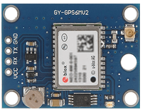
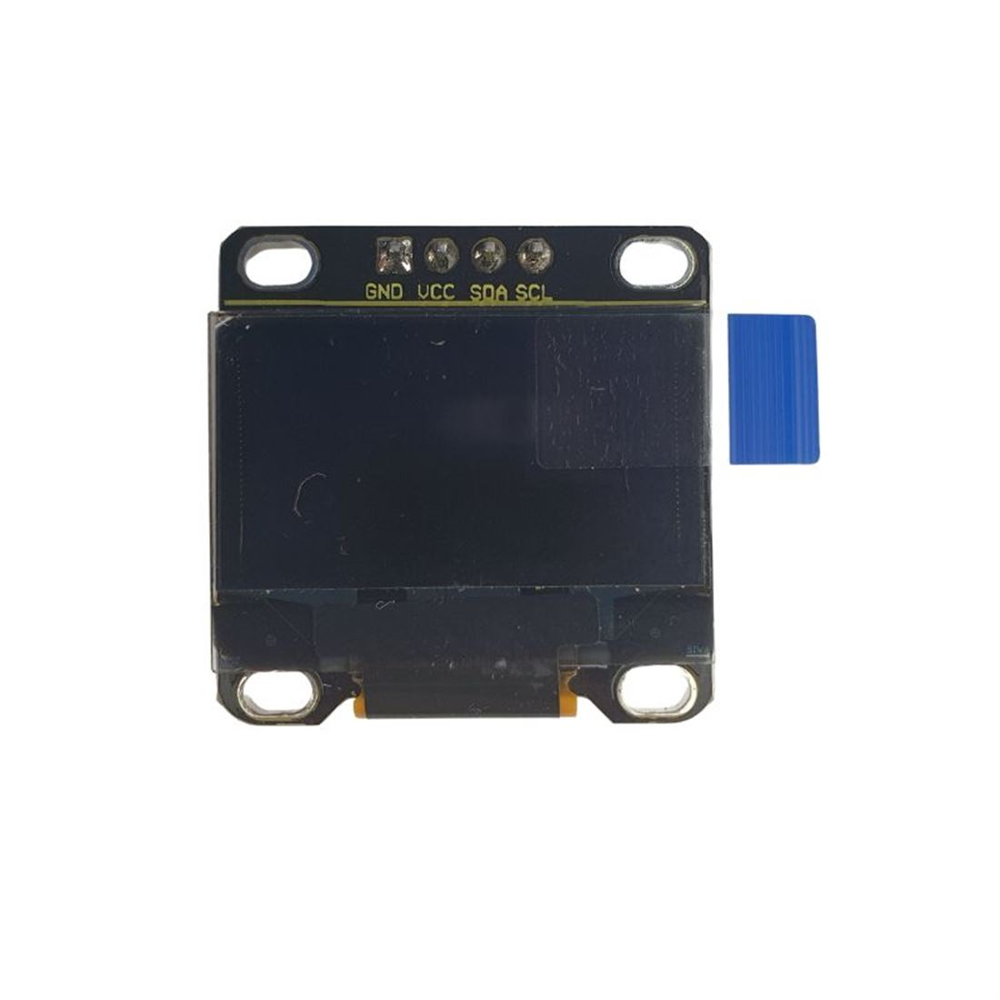

Estos son los elementos esenciales que conforman nuestro sistema de control, para acometer la misión primaria de CANSAT:
| Componente | Imagen | Descripción |
| ESP 32 SteaMakers |  |
Elemento de Control Esp32 fabricada por keyestudio, con factor de forma arduino y con aditamentos como pinout macho, microsd, sensores integrados de energía, programable con arduinoblocks y con una gran documentación disponible. Se usarán dos, una como emisor (en el satélite) y otro como receptor en PC de tierra |
| BMP 280 |  |
Sensor barométrico que da presión, altitud y temperatura |
| DHT22 |
Sensor digital que proporciona temperatura y humedad |
|
| GPS |  |
Periférico nos proporciona longitud, latitud, altura, velocidad, fecha, hora exacta, etc. |
| MPU6050 |  |
Sensor acelerómetro y giróscopo. Nos da las aceleraciones e inclinaciones en tres ejes. |
| Pantalla OLED |  |
Actuador Pantalla gráfica oled de 0,96" 128x64 píxeles |
| Módulo LoRa - LoRaWan |
Periférico de comunicación que sirve para establecer comunicaciones LoRa (Long Range) |